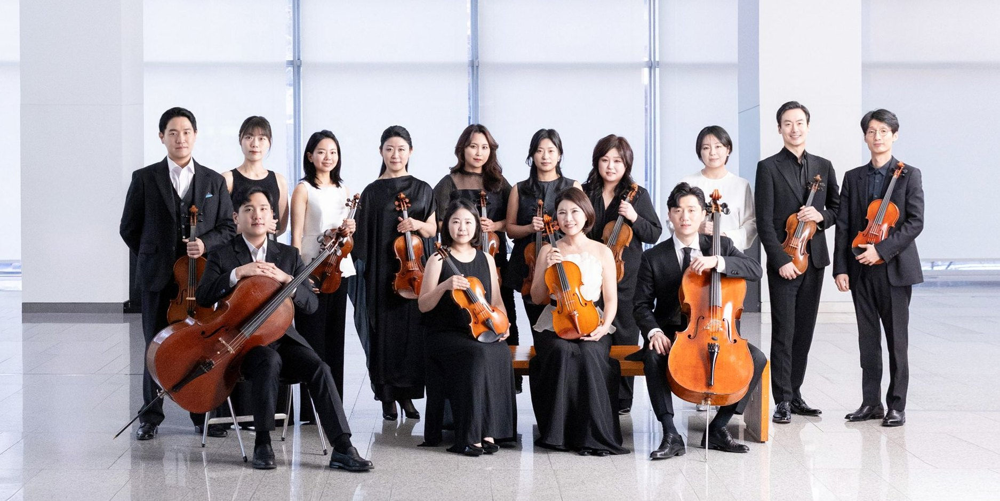

DAEGU VIRTUOSO
CHAMBERSTRING ONLY · SINCE 2020
CHAMBERSTRING ONLY · SINCE 2020



오직 현악으로
그리는 실내악의 정수
대구를 중심으로 세계와 호흡하는 현악 실내악단
SINCE2020
ABOUT
국내외에서 솔리스트이자 실내악 연주자로 인정받아온 연주자들이 뜻을 모아 결성한, 대구의 현악 실내악단입니다.
STRINGS
현이 만들어 내는 가장 단단한 울림,
오케스트라에 버금가는 진중함으로.ON STAGE